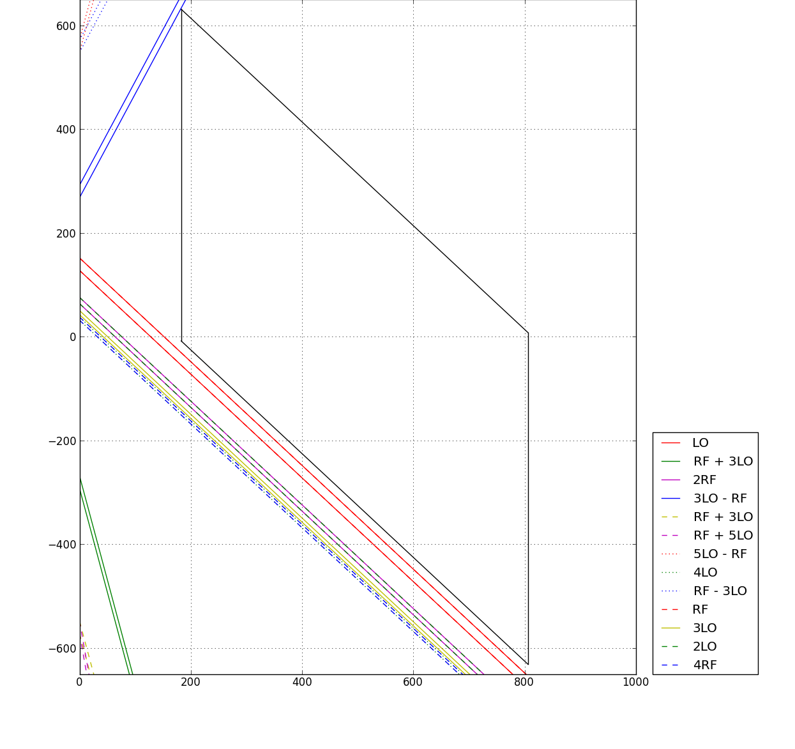
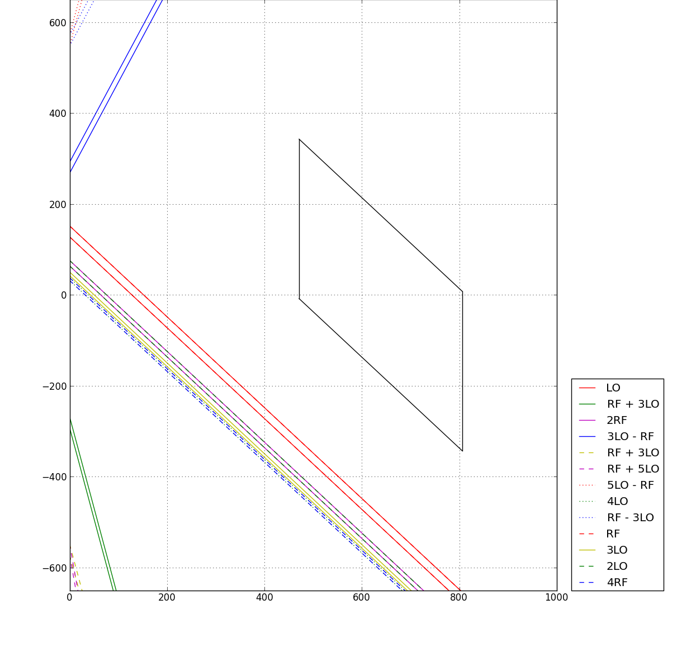
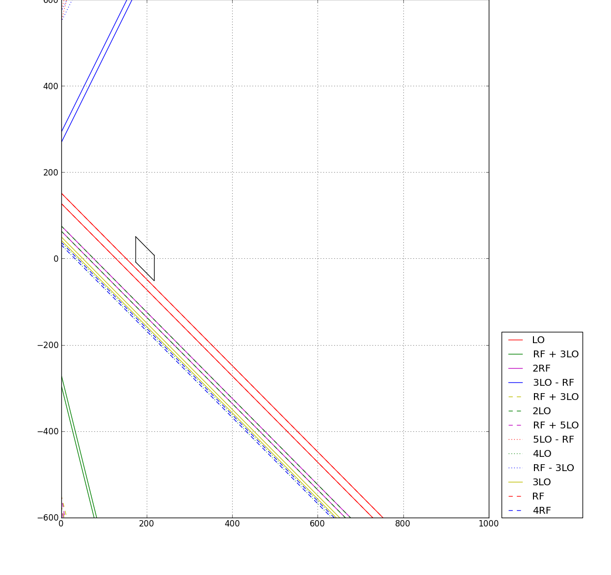
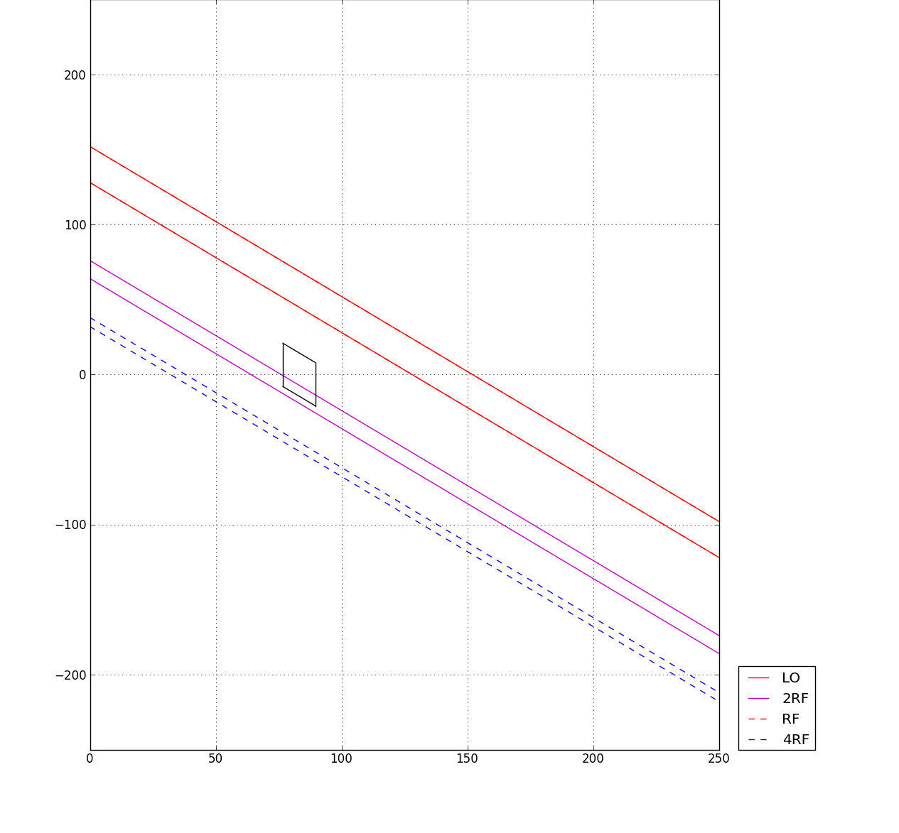
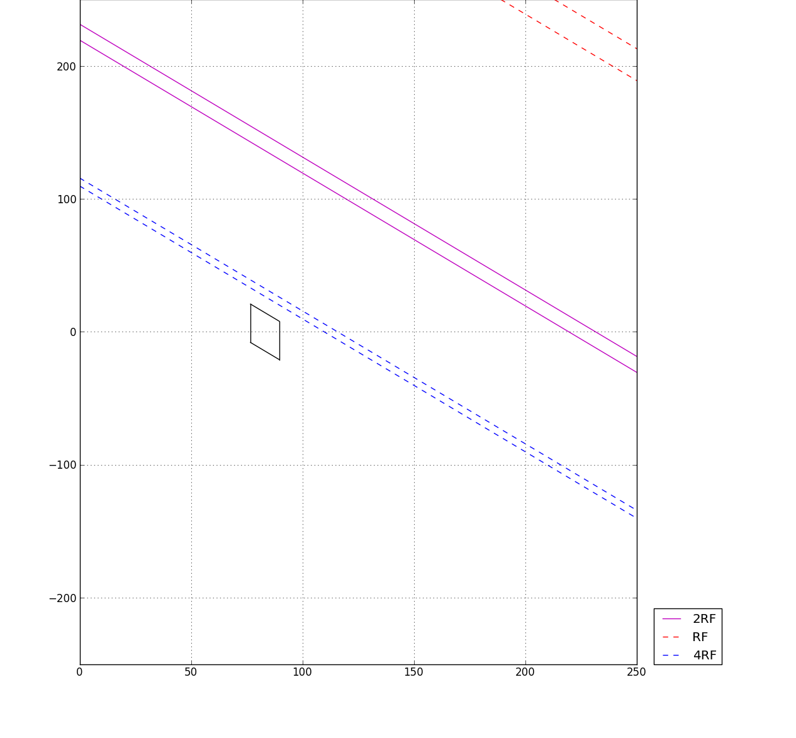

Tutorial
This is meant as a rough, quick-start tutorial to show how to create a frequency plan using the spur distances chart method. I assume you've read the original article, and understand the basic RF concepts at work.
I also assume you don't mind something pretty rough around the edges, because the writing here could surely use a bit of love, and I haven't worked through all the details so much as I've cranked out a description of how to use the tool.
Specs
We're going to design the receiver chain for a single stage down-converter to grab a whole bunch of TV channels. In North America, TV is across three bands: VHF I (chan 2-6, 54-72, 76-88 MHz), VHF III (chan 7-13, 174-216 MHz), and UHF (chan 14-69, 470-806 MHz), those are the RF frequencies we want. Our output is the final IF, for which we'll use 140 MHz, and to make things interesting, we'll insist on 14 MHz bandwidth at the output (TV channels are 6MHz wide, btw). Arbitrarily, we'll work with a target SFDR of 50 dB.
A good IF filter would be Triquint's 854919.
To create a mixer with these specs, where IF = RF - LO, we do:
m = mixer.mixer(1, -1, 140, 16, 4)
Mixer Selection
Target specs in hand, we can look for a mixer. For the purpose of this tutorial, I'll look at some Analog Devices mixers. Immediately, the following options pop out: 5801, 5350, 8342, 8343. Pull up their datasheets, and take a look at what's on offer. Mostly, because we're doing frequency planning, look at their spur tables. In a real design, you'd want to take in to account many other factors (power draw, gain/loss, linearity, size...) In the spur tables, pick out all the mixing products that are powerful enough to ruin our target SFDR.
Without looking too hard, I'll go with the ADL5801. Picking out all the mixing products of power worse than -50dBc:
m.spurs_from_list([(0, 1), (0, 2), (0, 3), (0, 4), (0, 5), (0, 6), (0, 8), (1, 0), (1, 3), (1, 5), (2, 0), (4, 0)])
The spurset object holds limits of the chart, so to cover an RF range 0-1000 MHz, with a distance span of +/- 1000 MHz:
sp = mixer.spurset(0, 1000, 2000, m)
And finally, let's see what a single filter to bring in all the TV bands at the same time will look like:
fef = mixer.fefilt(54, 806, 16)
Running the GUI
Start up the spur distance chart tool.
sdc.sdc(m, sp, fef)
The chart presented should be something like 
Check it out, we can cover 470-806 MHz with just one front-end filter! Even better, if we switch to IF = LO - RF, we can stretch all the way down to ~180 MHz and by tweaking the IF (not always an option), we can just barely cover 174-806 MHz.

The other option is two front end filters, one for each band. Plotting them each out, we can see that the parallelograms aren't as tall (no surprise) and fit in between the problem bands easier.

If we now zoom right in to the RF = 0-250 MHz range (with IF = LO - RF), we can sketch out a front-end filter for the VHF I band. Too bad there's a nasty 2RF spur cutting right through it. (wait, but it's negative? Yes, at RF = 88 MHz, IF = 140 MHz, 2 * RFb = IF. RFb = 70 MHz, which is only 18 MHz below 88 MHz. And it gets worse, because of IFBW and the guard band.)

It doesn't look like we've got much more to go on here. With this mixer and IF, there is no way to avoid that 2RF problem. One choice we may make is to change mixers, hope to find one with a ridiculously low 2RF modulation product (don't bank on it), or try to bias this one to reduce the problem. Unfortunately, there is no amount of filtering that could take care of this.
An other option to consider is changing the IF. By moving it up above 430 MHz, all the threatening mixing products are moved out of the front end filter. We lose our 140 MHz final IF, but maybe we can work this in somehow? Looking back at the mixer set up handle the VHF III and UHF bands, it was perfectly clean in the mid 400's. By putting a third switchable filter in front of it, and an extra mixer and LO, we can upconvert VHF I to ~450 MHz, and then downconvert it again. Of course, this needs to be checked on the spur distances chart, because IFBW and G will be different, but I suspect it will work.

A couple notes on that though. 1. It increases part count. That may be unacceptable, which would mean you now have to negotiate a different final IF. 1a. However, you may be able to get away with a single tone LO for the first stage, moving the whole VHF I band up to ~450. This would be less of an increase than a complete second frequency synthesizer. 2. It creates additional complexity through the VHF I band that is not there on the others. This is manageable. 3. You may be tempted to just use the bottom end of the UHF front end filter as a first IF filter. Think it through, and take a look at the spur distances chart for that config before you do.
So now we have a frequency plan, simple as that. There is still a lot more work to go through, which may come around to invalidating this design, but the process is all there. An example problem may be that using an IF = LO - RF configuration causes spectral inversion (a channel gets flipped as it gets downconverted, so that what is the upper end at RF becomes the lower end at IF), and even if that's acceptable, it may not be so that the VHF III and UHF bands get inverted, while the VHF I band does not (well, it gets inverted twice, which cancels it all out).